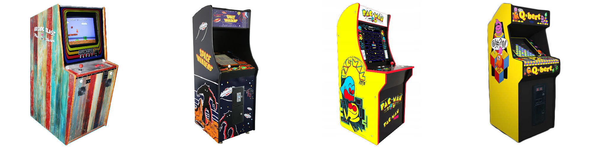
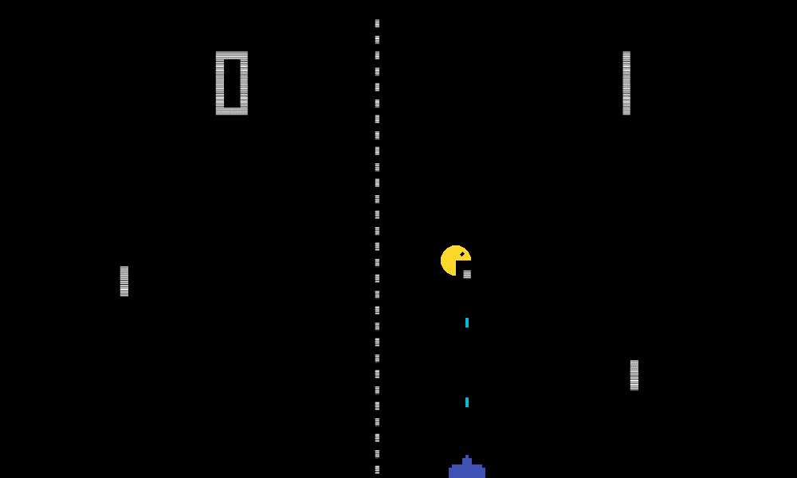
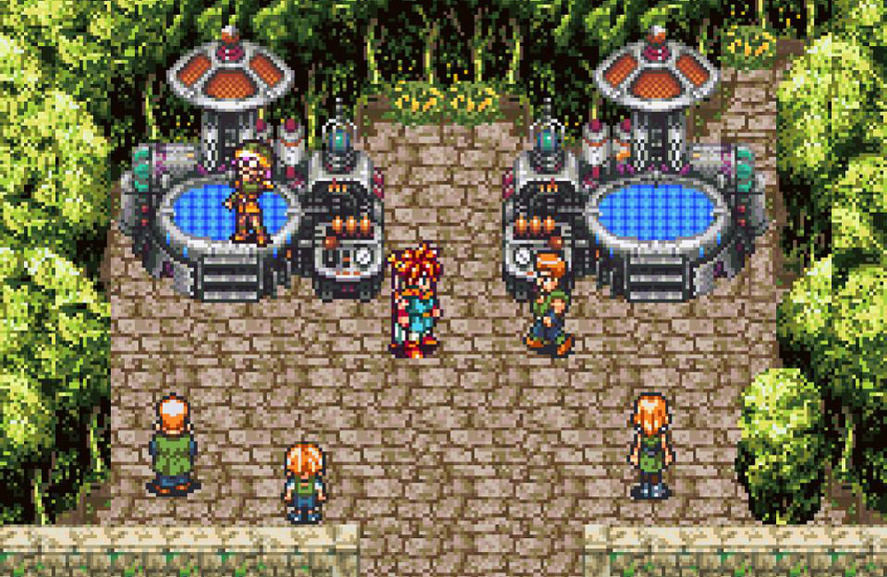
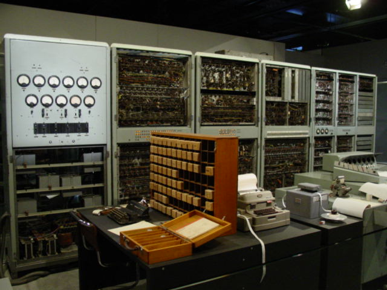

| ГЛАВНАЯ | ИСТОРИЯ | ИНФО |
Легендарный 1972 год. Magnavox представляет первую в мире игровую приставку, открывая ворота консольного гейминга перед людьми. Спустя полгода Atari выпускает аркадный автомат Pong, который не только, вопреки ожиданиям, имеет ошеломительный коммерческий успех, но и из чернового проекта превращается в важную веху в истории геймдева.
С этого момента кровопролитные войны между игровыми корпорациями происходили чаще, а новинки игровой индустрии появлялись на рынке в огромных количествах. Знаменательным событием стал выход приставки Atari 2600 на восьмиразрядном микропроцессоре. Портативная консоль с двумя джойстиками в комплекте стала самой продаваемой приставкой второго поколения. Программисты Atari успешно портировали на приставку такие хиты как Space Invaders, Pac-Man от Namco и, конечно, гордость Nintendo - Mario Bros.

 Что касается пиксель-арта и других подобных ему стилей 70-80-х годов, он появился на свет из необходимости и технологических ограничений. Старые приставки и автоматы не могли создавать что-то сложнее мозаики из квадратных точек. Между тем, компьютерная графика уже требовалась.
Слово «пиксель-арт» появилось где-то в 1972 году: его использовал программист Ричард Шоуп, который создал инновационную графическую систему SuperPaint. Она сохраняла изображения в разрешении 640 на 480 точек с 8-битным цветом (3 бита на красный, 3 на зеленый, 2 на голубой цвета). Революционная программа опережала свое время. Ее использовали, например, чтобы создать анимацию миссии космического аппарата НАСА Пионер-Венера-1 в 1978 году. Поначалу у простых потребителей выбор был попроще.
Первопроходцами в этом стиле были такие игры, как Pong, Space Invaders и Pacman. Постепенно, игровая индустрия осознала всю силу такого изображения и стиля и начали появляться более сложные и детализированные Super Mario, Donkey Kong, Contra, Final Fantasy и т.д.
Таким образом к середине 90-х двухмерная графика достигла своего пика. Это был зенит оригинальной волны пиксель-арта. Chrono Trigger выглядит здорово и сейчас. У игры занимательный сюжет и невероятно детальная атмосфера: тщательно отрисованные пейзажи, растительность, города и персонажи. Интересно, что к графике приложил руку мангака Акира Торияма, создатель Dragon Ball. Художнику хватило маленьких спрайтов, чтобы при помощи 16-битной палитры изобразить шедевр.
Предтечей к появлению восьмибитной музыки стали музыкальные эксперименты с компьютерами. По не подтвержденной информации, первая демонстрация такого эксперимента могла быть проведена весной 1949-го года на компьютере ЭНИАК группой программисток.
Впоследствии было ещё много экспериментов и демонстраций музыкальных программ. Так, например, в период с 7 по 9 августа 1951 года в Сиднее проводилась открытая конференция по автоматическим вычислительным машинам, где математик и программист Джефф Хилл продемонстрировал музыку на компьютере CSIRAC.
Но полноценное развитие компьютерной музыки началось вместе с выходом по-настоящему массовых персональных компьютеров, обладающих большими музыкальными и графическими возможностями. В особенности стоит отметить появление такого явления как демосцена, которое началось со взлома игр и вставки перед запуском основной программы электронной подписи "крякеров". Подпись представляла собой логотип команды, сопровождающееся музыкой и простыми эффектами. Со временем эти подписи выросли в качестве и абстрагировались от взлома, вылились в отдельное компьютерное искусство.
Сильное влияние на раннюю демосцену оказали компьютеры Commodore 64 и ZX Spectrum, вышедшие в 1982-м году.
С 2005 года многие «обычные» музыканты стали успешно использовать восьмибитные инструменты. И так, постепенно довольно экспериментальный и "странный" вид музыки начал вливаться в творчество множества известных и неизвестных исполнителей.